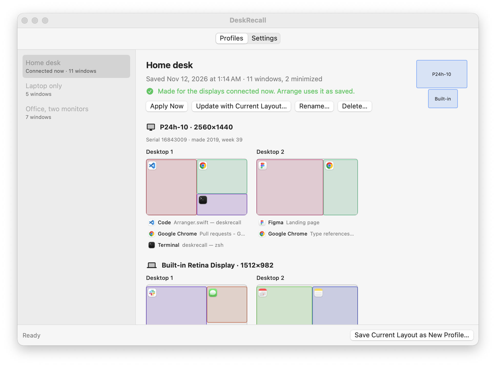
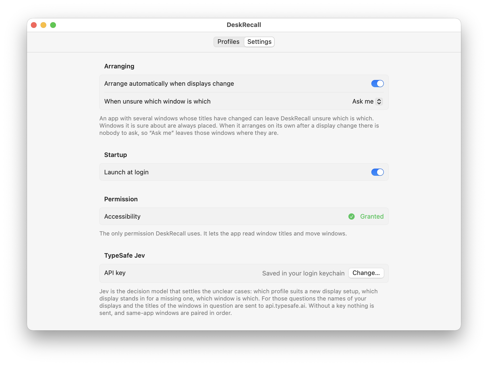
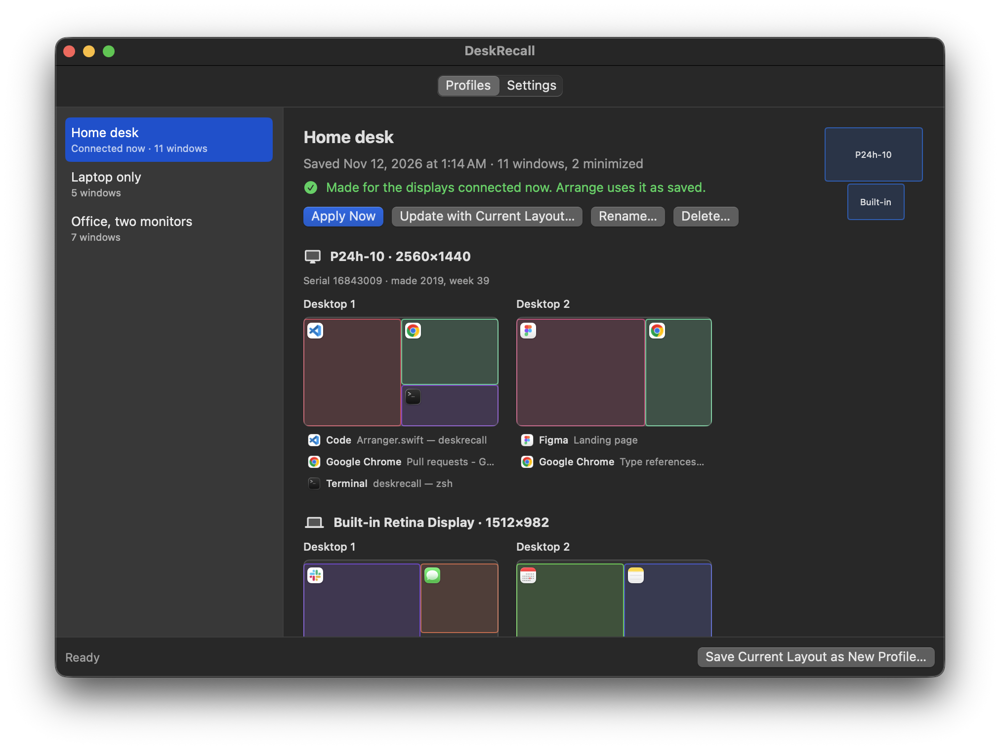

Every window back where it belongs.
DeskRecall is a macOS menu bar app that restores your window layout for whichever displays are connected: the right display, the right desktop, the right size, minimized or not.
Free. macOS 14 or later, Apple Silicon and Intel. Signed and notarized by Apple.
macOS forgets where your windows go
You plug your laptop into the monitor at home, then into the ones at the office, then work from the sofa. Each time, your windows end up wherever they landed.
Wrong display
Unplug a monitor and everything piles onto the laptop screen. Plug it back in and only some of it returns.
Wrong desktop
You keep mail on one desktop and code on another. After a display change they are mixed together, and no layout tool sorts them back out.
Wrong state
The chat window you keep minimized is in the middle of the screen. The one you need is still in the Dock.
Save a layout once, get it back every time
Put your windows where you want them
Across every display and desktop. Minimize the ones you want out of the way.
Save a profile
One per display setup: laptop only, home monitor, office monitors. It takes one click.
Arrange
Click Arrange, or just plug a display in. DeskRecall finds the profile for the displays connected now and moves every window back.

How it differs from Stay and Rectangle Pro
Window managers snap windows into halves and thirds. Layout savers put windows back on a display. DeskRecall does one job they leave undone: it puts a whole working layout back, across desktops, including what was minimized.
| Stay | Rectangle Pro | DeskRecall | |
|---|---|---|---|
| A layout per display setup | Yes, exact match only | Yes, per named display | Yes, and the closest profile is adapted to a new setup |
| Moves windows to other desktops (Spaces) | No | No | Yes |
| Reaches windows on desktops you aren't looking at | No | No | Yes |
| Restores minimized state | No | No | Yes, both ways |
| Shows a saved layout as a picture | No | No | Yes |
| Windows whose titles changed | Manual linking and patterns | Title patterns, window order | Window identity first, then a decision model |
| Snapping, halves and thirds, shortcuts | No | Yes | No. Keep Rectangle for that; the two work together. |
It knows which monitor, and which window
Two monitors of the same model are not the same monitor
- A monitor is identified by vendor, model and serial number. Many monitors ship with a placeholder serial, so DeskRecall also records the week and year it was made and the identifier macOS gives it.
- The monitor at the office does not pick up the profile you saved at home, even when both are the same model.
- Two identical monitors side by side each keep their own windows.
- The same monitor at a different scaled resolution is still the same monitor.
A window is more than its title
- While a window stays open it is recognised exactly, whatever its title says now. Plugging and unplugging displays never closes windows, so this covers the everyday case.
- After that: the file it shows, then its title.
- Windows of Chrome and other Chromium browsers are matched only within their own browser profile. A Work window never takes a Personal window's place.
- What is still unclear goes to a decision model, and you choose what happens when even that is unsure: ask, take the best guess, or leave the window alone.


The decision model is TypeSafe Jev, and it is optional. With a key, the names of your displays and the titles of the windows in question are sent to it for the unclear cases only. Without a key nothing leaves your Mac.
Install
- Download DeskRecall.zip, unzip it and move DeskRecall to your Applications folder.
- Open it. The app is signed with a Developer ID and notarized by Apple, so macOS opens it after the usual confirmation for a downloaded app.
- Grant Accessibility when asked. It is the only permission the app uses; it lets it read window titles and move windows.
- Arrange your windows, click the menu bar icon and choose Save Layout as New Profile…. Do this once per display setup.
Prefer to build it yourself? You need the Xcode command line tools.
git clone https://github.com/sreenivasanac/deskrecall.git cd deskrecall scripts/build-app.sh
The README has the full details: the menu, the command line, and the known limits.
Requirements and compatibility
| macOS | 14 (Sonoma) or later. Moving windows between desktops needs macOS 26.4 or later; older versions still restore display, position, size and minimized state. |
|---|---|
| Mac | Apple Silicon or Intel. Tested on Apple Silicon with macOS 26.7; Intel is untested. |
| Permission | Accessibility only. |
| Network | None, unless you add a TypeSafe Jev key. |
| Mac App Store | Not available there: desktops are handled through a private macOS framework. |